Visual Studio Code，下文中简称为VS Code的详细安装方法请参考VSCode安装教程（超详细）-CSDN博客
MinGW(Minimalist GNU for Windows)是一款用于Windows 平台的轻量级 开源编译器工具集，基于 GNU 编译器集合（GCC, GNU Compiler Collection）。它提供了一组工具和库，用于将 C、C++ 和 Fortran 等语言的源代码编译为 Windows 可执行文件。
VS Code作为一个轻量级代码编辑器 ，本身不带编译功能。要运行和调试 C++ 程序，必须有一个能够将代码转为可执行文件的编译器，而 MinGW可以实现上述功能。
VS Code中的C++插件（如 C/C++ Extension）能够直接调用 MinGW 提供的 GCC编译器进行编译。MinGW提供的gdb调试器可以用于VS Code的调试工具链。
MinGW的下载地址：MinGW Distro - nuwen.net
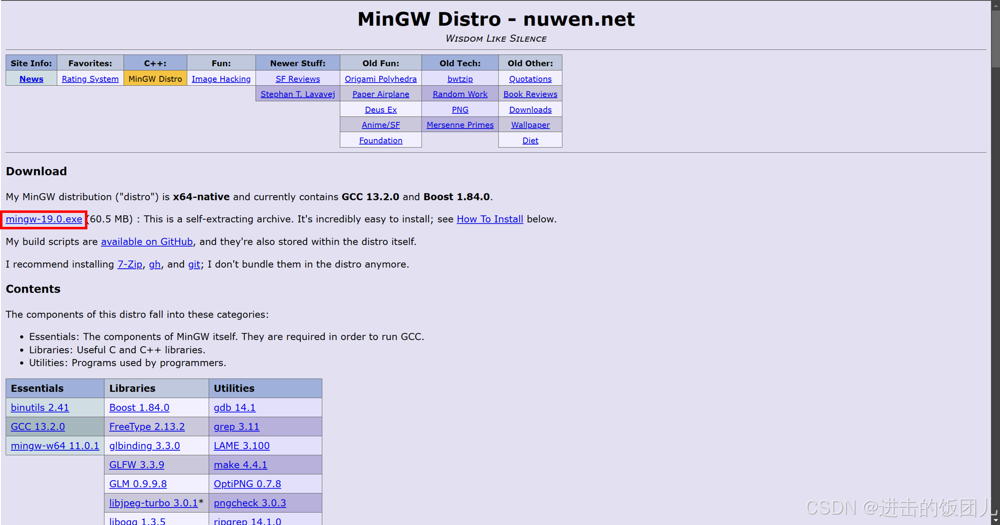
点击下载mingw-19.0.exe文件并安装。注意提取文件的路径不能包含中文。本人将文件提取到D:\MinGW路径下。
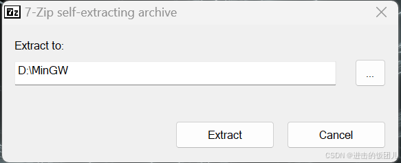
找到提取后的MinGW中bin文件夹的路径并复制。
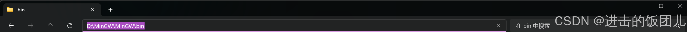
MinGW的环境变量配置方法如下：
Win+R组合键打开运行对话框，输入sysdm.cpl打开系统属性。在高级选项卡下点击环境变量。
双击用户变量中的Path。
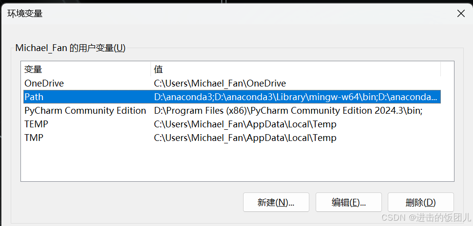
点击新建，将复制的MinGW中bin文件夹的路径粘贴进去。
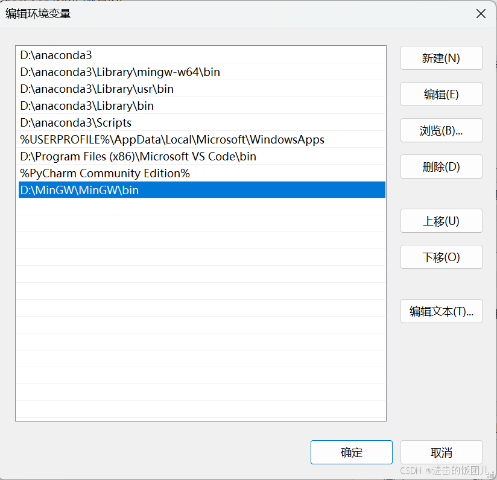
依次点击三次确定后，至此MinGW的环境变量配置完毕。
验证MinGW安装是否成功的方法如下：
Win+R组合键打开运行对话框，输入cmd，在终端中输入g++ –version。如果终端中正常打印出g++的版本号，则证明MinGW已经成功安装。
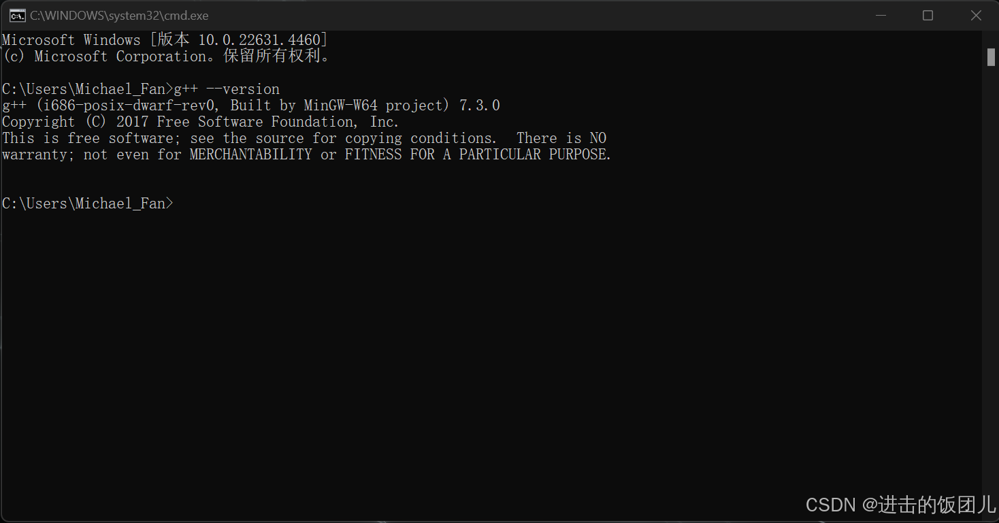
打开VS Code软件 ，在左侧点击插件管理按钮。
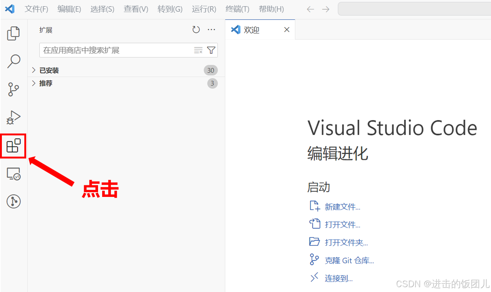
在搜索栏中搜索C/C++，安装C/C++插件。该插件是由微软官方发布的一款扩展（C/C++ Extension），旨在为开发者提供高效的C和C++代码编辑、调试和构建功能。它是用VS Code进行C/C++开发的核心工具。
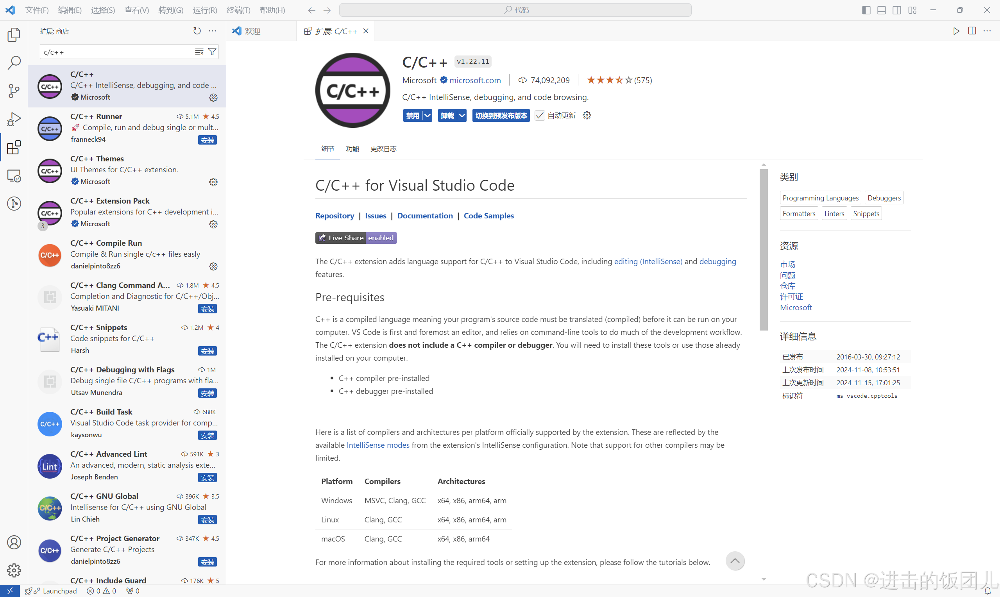
在搜索栏中搜索code runner，安装code runner插件。该插件可以让开发者快速运行多种编程语言的代码，而无需配置复杂的任务或调试环境。
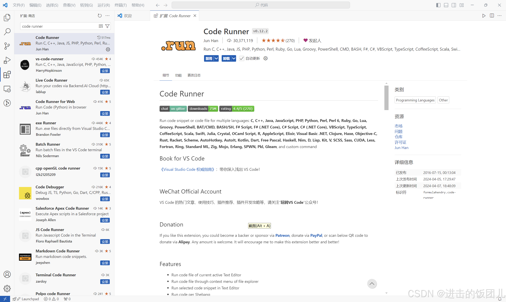
在搜索栏中搜索c/c++ Extension Pack，安装c/c++ Extension Pack插件。该插件由多个与C/C++开发相关的插件组成，帮助开发者更高效地在VS Code中进行代码编辑、调试、构建和测试工作。
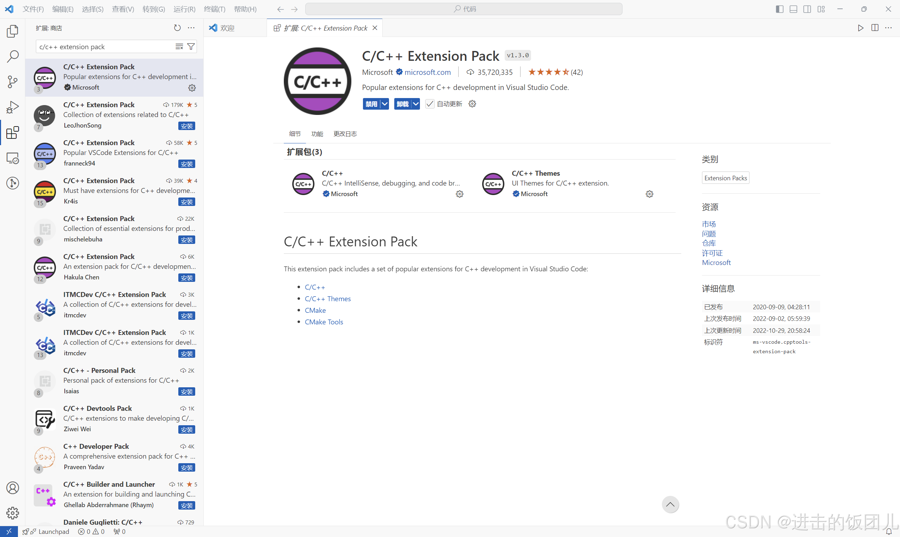
在搜索栏中搜索Cmake，安装c/c++ Extension Pack插件。该插件专门为使用CMake构建系统的开发者设计。它提供了丰富的功能，可以帮助开发者更高效地配置、生成、构建和调试基于CMake的项目。
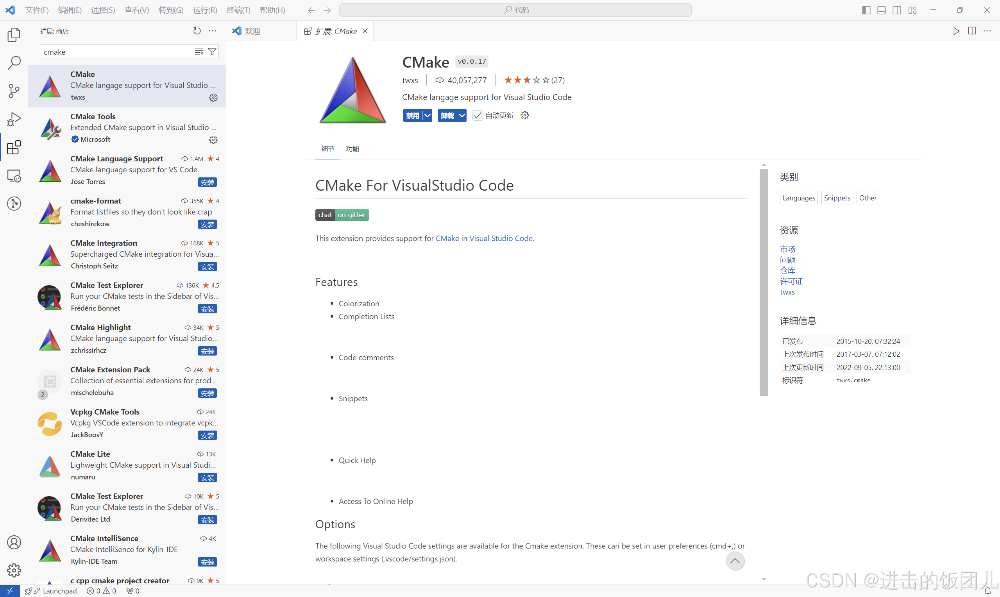
首先创建一个文件夹，注意不要用中文名称，待调试的C/C++代码都要在这个文件夹中才能正常调试。本人创建的文件夹名称为vscode_c_cpp_test。
在VS Code中打开创建的vscode_c_cpp_test文件夹。点击新建文件夹按钮，命名为.vscode（这个名称不能修改）。
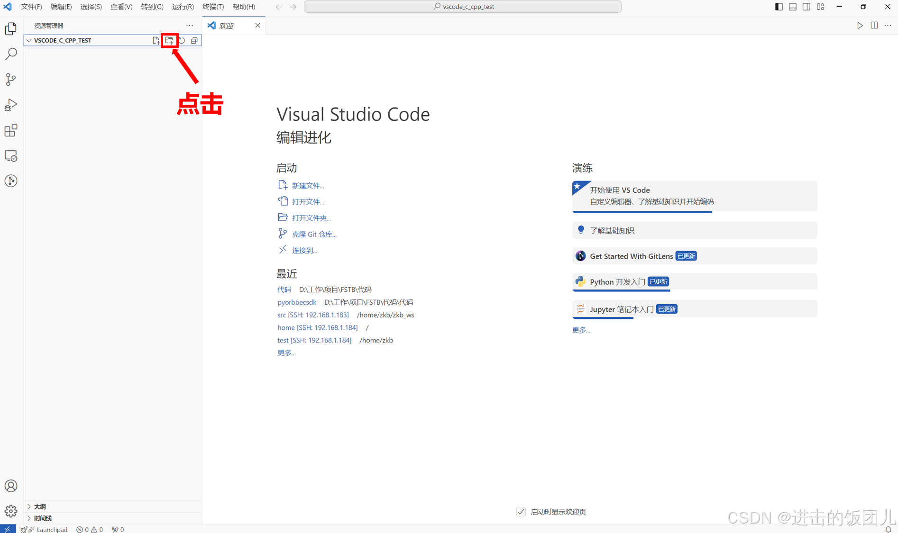
选中新建的.vscode文件夹 ，点击新建文件按钮。在.vscode文件夹下创建四个文件，文件名如下：
1
2
3
4
c_cpp_properties . json
launch . json
settings . json
tasks . json
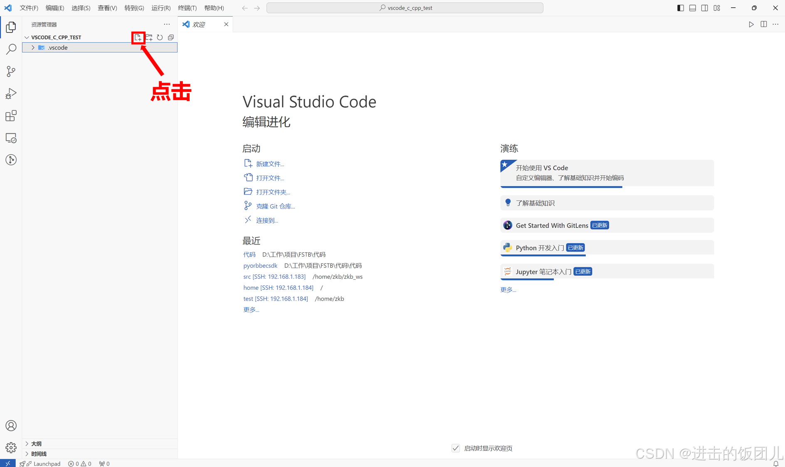
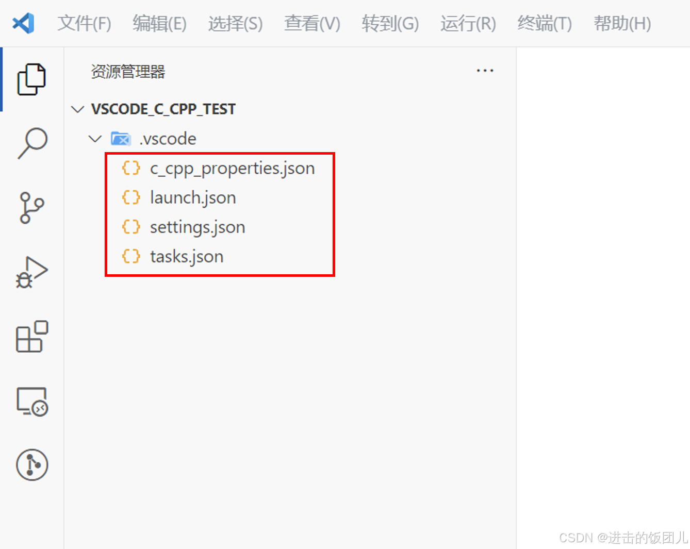
首先配置c_cpp_properties.json 文件，该文件用于配置C/C++扩展的编译环境信息，帮助VS Code更好地提供代码提示、语法检查、错误报告等功能。它主要指定头文件路径、编译器配置和其他信息。所配置的文件内容如下：
1
2
3
4
5
6
7
8
9
10
11
12
13
14
15
{
"configurations" : [
{
"name" : "Win64" ,
"includePath" : [ "${workspaceFolder}/**" ],
"defines" : [ "_DEBUG" , "UNICODE" , "_UNICODE" ],
"windowsSdkVersion" : "10.0.22631.4460" ,
"compilerPath" : "D:/MinGW/MinGW/bin/g++.exe" ,
"cStandard" : "c17" ,
"cppStandard" : "c++17" ,
"intelliSenseMode" : "gcc-x64"
}
],
"version" : 4
}
注意事项：
1）windowsSdkVersion的查询方法： Win+R组合键打开运行对话框，输入cmd，在终端中输入VER。经查询，本人计算机的windowsSdkVersion为10.0.22631.4460。
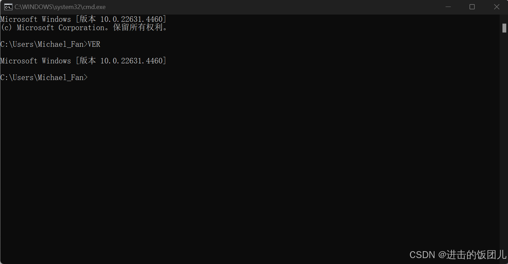
2）compilerPath需要配置成g++的安装路径。本人的安装路径为D:/MinGW/MinGW/bin/g++.exe。
然后配置launch.json 文件，该文件用于配置调试环境，它定义了如何启动、运行和调试C/C++程序。通过这个文件可以指定调试器、程序路径、启动参数以及调试相关的设置，从而完成对程序的调试任务。所配置的文件内容如下：
1
2
3
4
5
6
7
8
9
10
11
12
13
14
15
16
17
18
19
20
21
22
23
24
25
26
{
"version" : "0.2.0" ,
"configurations" : [
{
"name" : "(gdb) Launch" ,
"type" : "cppdbg" ,
"request" : "launch" ,
"program" : "${fileDirname} \\ ${fileBasenameNoExtension}.exe" ,
"args" : [],
"stopAtEntry" : false ,
"cwd" : "${workspaceRoot}" ,
"environment" : [],
"externalConsole" : true ,
"MIMode" : "gdb" ,
"miDebuggerPath" : "D: \\ MinGW \\ MinGW \\ bin \\ gdb.exe" ,
"preLaunchTask" : "g++" ,
"setupCommands" : [
{
"description" : "Enable pretty-printing for gdb" ,
"text" : "-enable-pretty-printing" ,
"ignoreFailures" : true
}
]
}
]
}
注意事项：
miDebuggerPath需要配置成gdb的安装路径。本人的安装路径为D:\MinGW\MinGW\bin\gdb.exe。
接下来配置settings.json 文件，该文件用于为当前项目定义工作区范围内的设置。这些设置会覆盖全局设置，并针对特定项目进行定制化配置。在配置C/C++环境时，该文件可以用来指定代码格式化、编译路径、头文件搜索路径等与开发环境相关的参数。所配置的文件内容如下：
1
2
3
4
5
6
7
8
9
10
11
12
13
14
15
16
17
18
19
20
21
22
23
24
25
26
27
28
29
30
31
32
33
34
35
36
37
38
39
40
41
42
43
44
45
46
47
48
49
50
51
52
53
54
55
56
57
58
59
60
61
62
63
64
65
{
"files.associations" : {
"*.py" : "python" ,
"iostream" : "cpp" ,
"*.tcc" : "cpp" ,
"string" : "cpp" ,
"unordered_map" : "cpp" ,
"vector" : "cpp" ,
"ostream" : "cpp" ,
"new" : "cpp" ,
"typeinfo" : "cpp" ,
"deque" : "cpp" ,
"initializer_list" : "cpp" ,
"iosfwd" : "cpp" ,
"fstream" : "cpp" ,
"sstream" : "cpp" ,
"map" : "c" ,
"stdio.h" : "c" ,
"algorithm" : "cpp" ,
"atomic" : "cpp" ,
"bit" : "cpp" ,
"cctype" : "cpp" ,
"clocale" : "cpp" ,
"cmath" : "cpp" ,
"compare" : "cpp" ,
"concepts" : "cpp" ,
"cstddef" : "cpp" ,
"cstdint" : "cpp" ,
"cstdio" : "cpp" ,
"cstdlib" : "cpp" ,
"cstring" : "cpp" ,
"ctime" : "cpp" ,
"cwchar" : "cpp" ,
"exception" : "cpp" ,
"ios" : "cpp" ,
"istream" : "cpp" ,
"iterator" : "cpp" ,
"limits" : "cpp" ,
"memory" : "cpp" ,
"random" : "cpp" ,
"set" : "cpp" ,
"stack" : "cpp" ,
"stdexcept" : "cpp" ,
"streambuf" : "cpp" ,
"system_error" : "cpp" ,
"tuple" : "cpp" ,
"type_traits" : "cpp" ,
"utility" : "cpp" ,
"xfacet" : "cpp" ,
"xiosbase" : "cpp" ,
"xlocale" : "cpp" ,
"xlocinfo" : "cpp" ,
"xlocnum" : "cpp" ,
"xmemory" : "cpp" ,
"xstddef" : "cpp" ,
"xstring" : "cpp" ,
"xtr1common" : "cpp" ,
"xtree" : "cpp" ,
"xutility" : "cpp" ,
"stdlib.h" : "c" ,
"string.h" : "c"
},
"editor.suggest.snippetsPreventQuickSuggestions" : false ,
"aiXcoder.showTrayIcon" : true
}
最后配置tasks.json 文件，该文件用于配置任务自动化。在配置C/C++开发环境时，该文件主要定义编译任务，帮助开发者完成程序的编译、构建、清理等操作。所配置的文件内容如下：
1
2
3
4
5
6
7
8
9
10
11
12
13
14
15
16
17
18
19
20
21
22
23
24
25
26
27
28
29
30
31
32
{
"version" : "2.0.0" ,
"tasks" : [
{
"label" : "g++" ,
"command" : "g++" ,
"args" : [
"-g" ,
"-fexec-charset=GBK" ,
"${file}" ,
"-o" ,
"${fileDirname}/${fileBasenameNoExtension}.exe"
],
"problemMatcher" : {
"owner" : "cpp" ,
"fileLocation" : [ "relative" , "${workspaceRoot}" ],
"pattern" : {
"regexp" : "^(.*):( \\ d+):( \\ d+): \\ s+(warning|error): \\ s+(.*)$" ,
"file" : 1 ,
"line" : 2 ,
"column" : 3 ,
"severity" : 4 ,
"message" : 5
}
},
"group" : {
"kind" : "build" ,
"isDefault" : true
}
}
]
}
在vscode_c_cpp_test文件夹下创建一个test.cpp文件，测试调试功能是否配置成功。
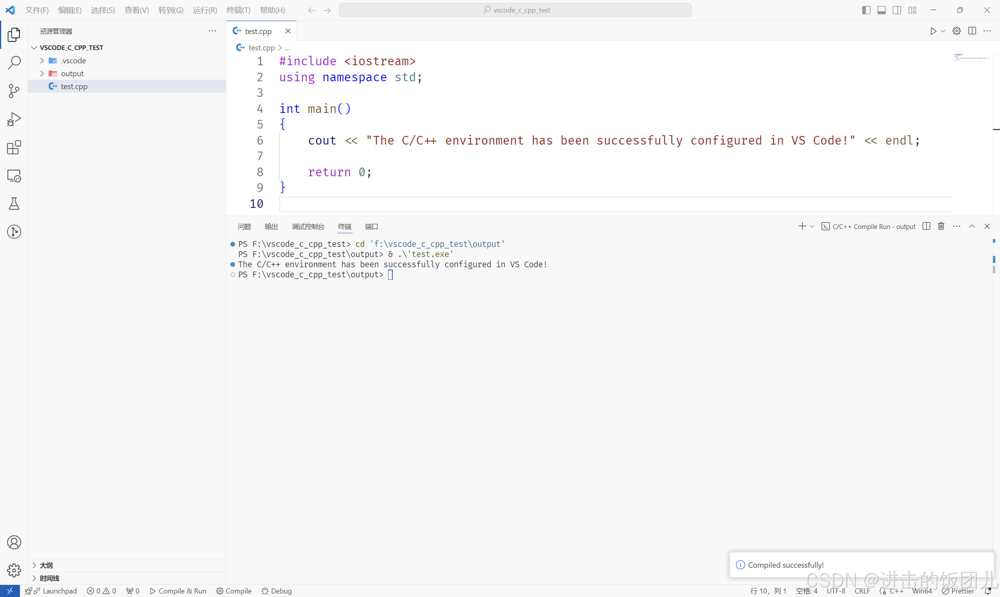
可以看到终端打印出了"The C/C++ environment has been successfully configured in VS Code!"。至此，已经成功为VS Code配置了C/C++环境。
原文地址：Visual Studio Code(VS Code)配置C/C++环境_vscode c++-CSDN博客
配置C/C++环境")